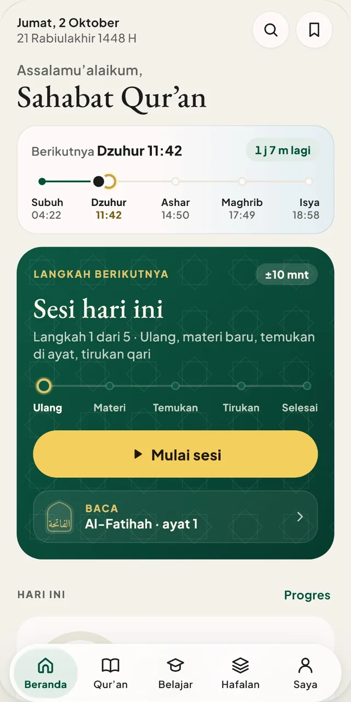
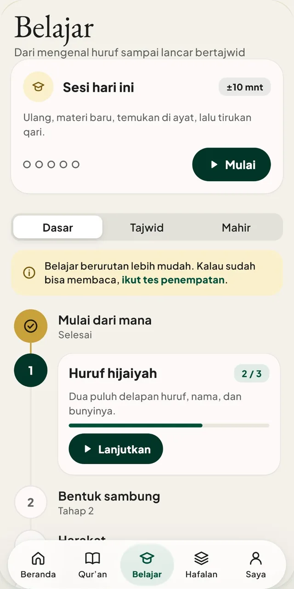
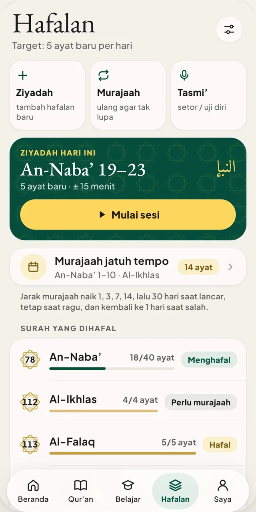

Salat
- Jadwal salat dengan metode Kemenag RI (data AlAdhan), lokasi otomatis atau pilih kota.
- Pengingat tiap waktu salat, pengingat tilawah, dan pengingat Sesi hari ini.
- Arah kiblat dengan GPS dan kompas.
Aplikasi Android · Gratis
MyQuran menyatukan bacaan, murottal, belajar tajwid, hafalan, dan jadwal salat dalam satu aplikasi yang tenang.

Satu aplikasi, lima kebiasaan
Kartu per ayat dengan teks Uthmani dan terjemahan di bawahnya. Ketuk huruf berwarna untuk melihat nama hukum tajwid, contoh kata di ayat itu, dan tombol dengar.
Beranda menunjukkan salat berikutnya dan satu langkah yang layak kamu ambil sekarang: sesi sekitar 10 menit, murajaah, atau lanjut membaca.
Ayat yang dibaca qari tersorot dan ikut bergulir. Murottal berjalan di latar belakang dengan kontrol di layar kunci, juga saat layar mati.
Jalur bertahap dari huruf hijaiyah sampai tajwid, dengan sesi harian sekitar 10 menit. Dengar qari, lalu rekam dan bandingkan dengan suaramu. Kamu menilai sendiri; aplikasi tidak menilai bacaanmu.

Ziyadah, murajaah, dan tasmi’ di satu tempat, dengan target ayat per hari. Jarak murajaah naik 1, 3, 7, 14, lalu 30 hari saat lancar, tetap saat ragu, dan kembali ke 1 hari saat salah.

Teks ayat dan terjemahan diambil persis dari dataset berlisensi, tanpa diketik ulang, tanpa dibuat AI, dan tanpa diubah. Sumber dan versinya tertera di aplikasi (Saya › Sumber & lisensi).
Materi tajwid tahap 6–16 ditulis dengan bantuan AI dan belum diperiksa guru tajwid, jadi tampil dengan label DRAF. Cocokkan dengan gurumu. Penjelasan cara membaca tiap hukum sengaja dikosongkan sampai ditulis guru.
Kontras teks minimal 4,5 : 1 di tema terang dan gelap, dukungan teks besar, palet kontras tinggi, dan pengaturan kurangi gerak dihormati.
Android · Gratis
Unduh, buka, dan lanjutkan dari mana pun kamu berhenti. Tidak perlu akun.
myquran.apk dari tombol di atas.Butuh Android 7.0 atau lebih baru. Setiap versi ditandatangani dengan kunci rilis yang sama.
myquran.apk
Memuat dari GitHub…
certutil -hashfile myquran.apk SHA256. Di macOS atau Linux: sha256sum myquran.apk.Catatan versi ditulis dalam bahasa Indonesia.
Memuat catatan versi…
Ya. Tidak ada iklan, pembelian, atau langganan. MyQuran proyek pelajar dan nonkomersial. Terjemahan Kemenag dari Tanzil hanya boleh dipakai nonkomersial, dan itu salah satu alasan aplikasi ini tetap gratis.
Teks ayat dan terjemahan Indonesia sudah ada di HP, jadi bisa dibaca tanpa internet. Terjemahan bahasa lain bisa diunduh untuk dibaca offline. Murottal bisa diunduh per surah; ada juga mode hemat kuota.
Antarmuka aplikasi saat ini hanya berbahasa Indonesia. Terjemahan Al-Qur’an tersedia dalam beberapa bahasa (Indonesia, Inggris, dan lainnya) dan bisa dipilih di pembaca.
Belum. Saat ini MyQuran hanya untuk Android, dan versi Google Play belum dirilis. APK dari halaman ini adalah cara resmi untuk memasangnya.
Android atau Play Protect memang menampilkannya untuk aplikasi di luar Play Store. Itu wajar. Kode sumbernya terbuka untuk diperiksa siapa pun, dan kamu bisa mencocokkan SHA-256 berkasnya di bagian “Pastikan unduhanmu asli”.
Aplikasi memeriksa versi baru paling sering sekali sehari dan menampilkan tombol Unduh bila ada. Pasang di atas versi lama tanpa menghapusnya, supaya progresmu tetap ada.
Semua progres tersimpan di HP. Masuk dengan Google bersifat opsional dan hanya untuk menyinkronkan sesi baca, penanda, dan tanggal sesi harian. Rekaman suaramu tidak pernah diunggah. Akun dan data cloud bisa dihapus kapan saja dari aplikasi (Saya › kartu profil › Hapus akun & data cloud) atau lewat halaman hapus akun. Rinciannya ada di kebijakan privasi.
Mohon laporkan lewat GitHub Issues. Kesalahan pada teks ayat atau terjemahan sangat membantu untuk dilaporkan.
| Data | Sumber | Lisensi / syarat |
|---|---|---|
| Teks Al-Qur’an | Tanzil Uthmani 1.0.2 | CC BY 3.0, salinan persis |
| Terjemahan Indonesia | Kementerian Agama RI (via Tanzil) | Nonkomersial, dengan atribusi |
| Terjemahan bahasa lain | QuranEnc | Tanpa diubah, sebut sumber dan versi |
| Warna tajwid | cpfair/quran-tajweed | CC BY 4.0 |
| Audio murottal | Islamic Network (alquran.cloud), MP3Quran, equran.id | Rekaman milik qari dan penerbitnya |
| Jadwal salat | AlAdhan | API gratis |
| Font | Plus Jakarta Sans, EB Garamond, Amiri, Amiri Quran | SIL OFL 1.1 |
Kode aplikasi berlisensi MIT dan hanya mencakup kode serta dokumen buatan pemilik. Teks Al-Qur’an, terjemahan, data tajwid, font, serta logo dan identitas MyQuran tetap mengikuti lisensi pemiliknya masing-masing (NOTICE).